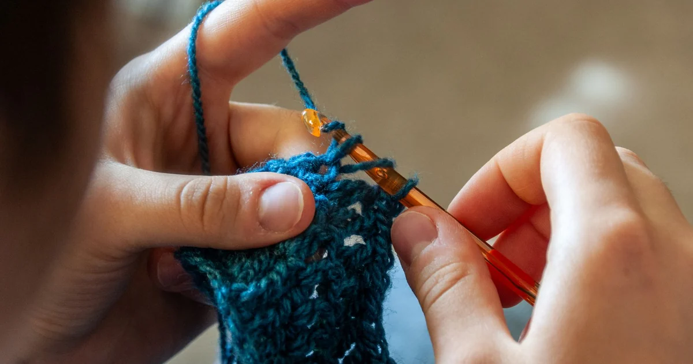
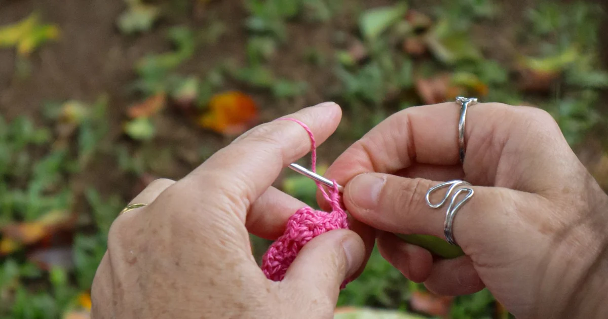
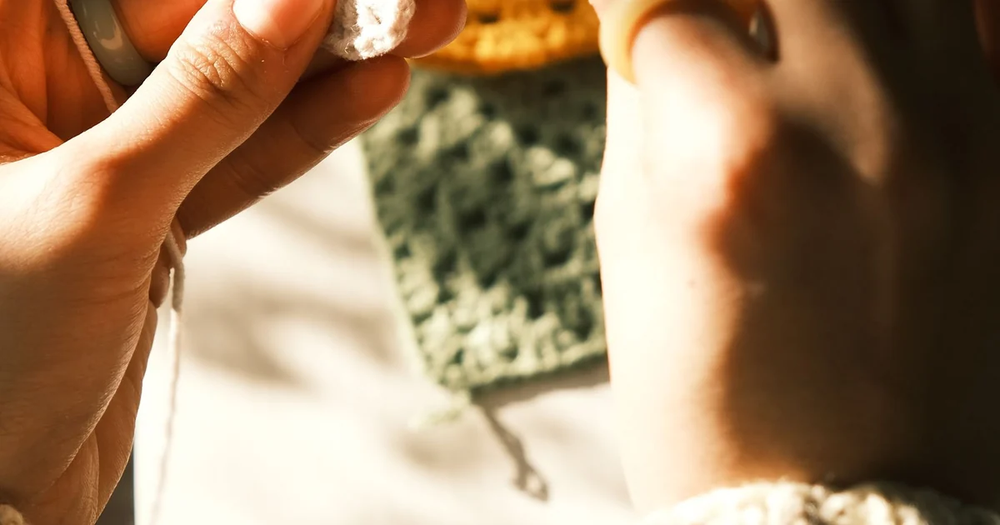
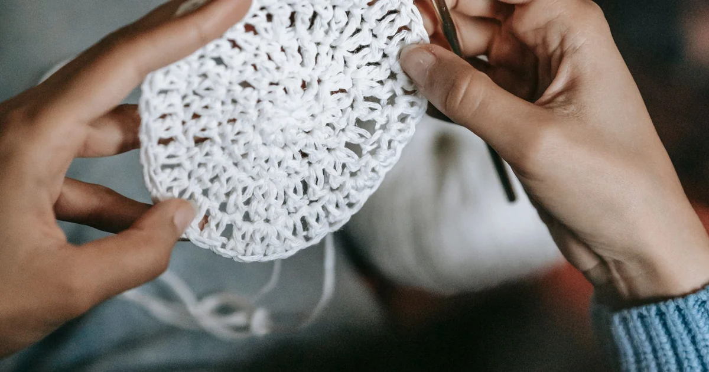
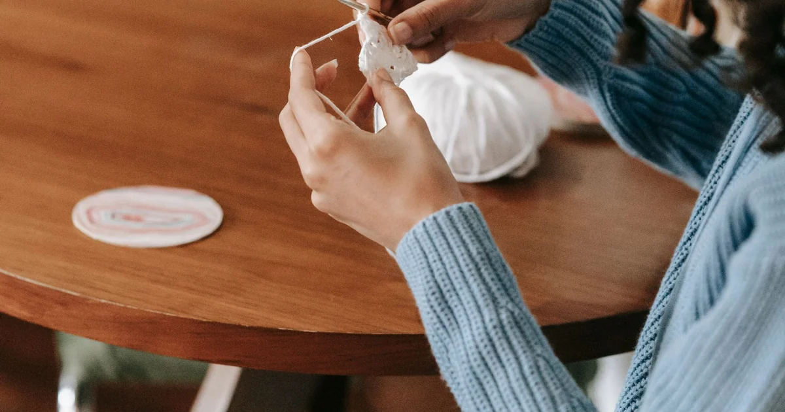
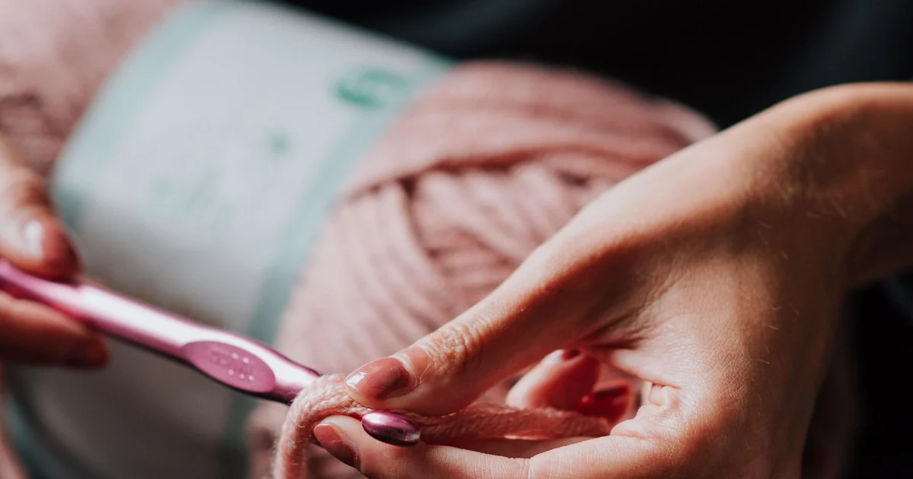
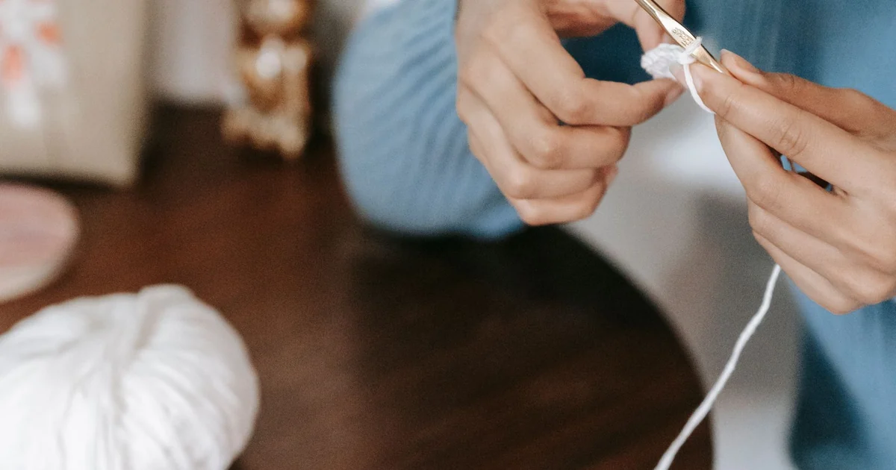
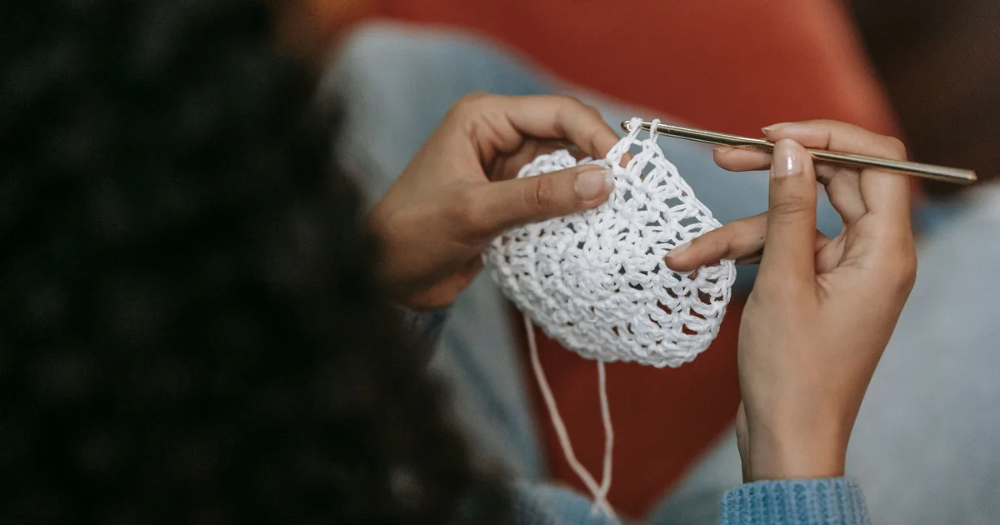

Stitches & TechniquesHow to Make a Half Double Crochet Stitch
A US half double crochet starts with a yarn-over, then draws up a loop and pulls through all three loops on the hook.
Browse category
Explore clear, beginner-friendly crochet tutorials in stitches & techniques. Start with the basics, practice at your own pace, and follow the linked guides whenever you need another explanation.

Stitches & TechniquesA US half double crochet starts with a yarn-over, then draws up a loop and pulls through all three loops on the hook.

Stitches & TechniquesA US double crochet is made by pulling through two loops twice after drawing up a loop.

Stitches & TechniquesA US treble crochet uses two yarn-overs before insertion and three pull-throughs of two loops.

Stitches & TechniquesCrochet in the round builds a circle or tube by working around a center, either in joined rounds or a continuous spiral.

Stitches & TechniquesRows turn back and forth; rounds continue around the work to make a tube or circular fabric.

Stitches & TechniquesFor a clean color change, many patterns finish the last stitch in the old color by drawing the new color through its final yarn-over.

Stitches & TechniquesJoin a new skein at a stable point, leave a tail for weaving, and follow the pattern’s preferred joining method.

Stitches & TechniquesWeave a yarn tail through several stitches on the wrong side, change direction, and leave the fabric relaxed.